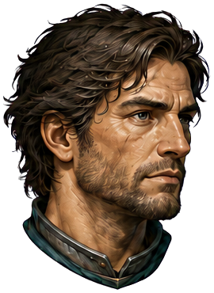

✧
GIFTBORNEКАМЕННЫЙ БРОД
2D • ART PROTOTYPE

Хранитель100 / 100
Световой меч
ХРАНИЛИЩЕ ПАМЯТИОдолейте стражей0 / 3
GIFTBORNE · ПЕРВЫЙ ЭПИЗОД
Память
Каменного Брода
Огонь кузницы ещё горит. За древними вратами пробудились стражи. Верните хранилищу свет своего подарка.
Пробная экипировка · без подключения инвентаря TelegramWASD — движение J — удар K — сила дара Пробел — рывок
ДВИЖЕНИЕ
Подойдите к стражам. Красный сектор предупреждает об ударе.
КАМЕННЫЙ БРОД
Тишина перед боем
Игра на паузе.
✧
ХРАНИЛИЩЕ ПРОБУЖДЕНО
Свет возвращён
Стражи пали. Память Каменного Брода снова принадлежит живым.
◈ Осколок памятиТрофей этого эпизода